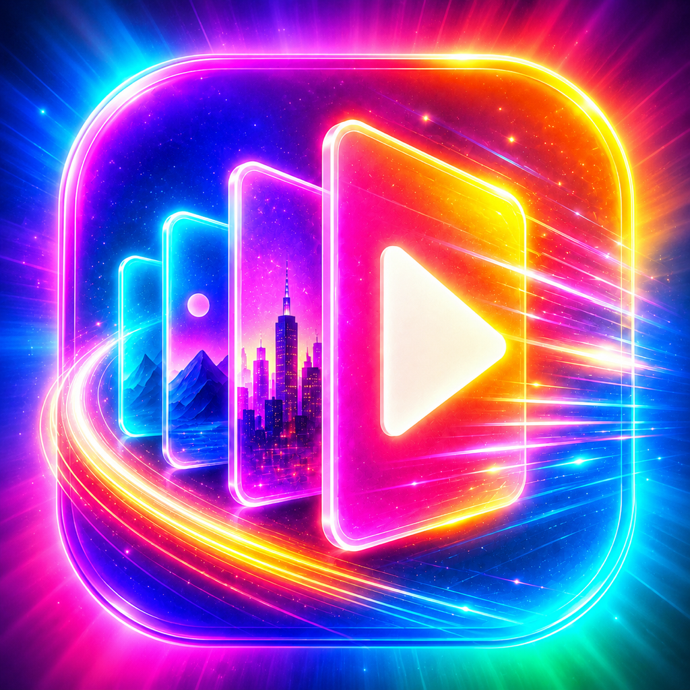
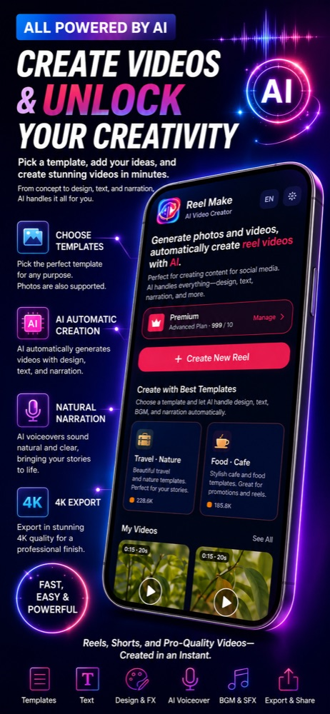
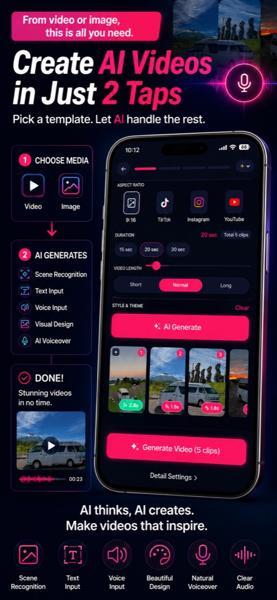
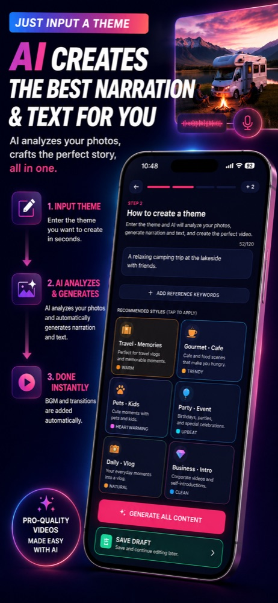

Reel MakeTurn your photos into a finished reel in just 2 taps
Pick your photos and videos, tap Create, and AI builds the whole reel for you.
Free to start · iOS & Android
32 AI voices · 15 languages · 9:16

From camera roll to finished reel in three taps
The shortest path is real: pick your media and tap Create. Everything after step 1 is optional.
Pick photos & videos
Select the moments you want. That is the only step you truly need.
Choose a theme & voice
Pick a style, an AI voice, and music — or skip it and let AI decide.
Tap Create
AI writes the script, records narration, adds captions and BGM, and renders a 9:16 reel.
One app, the whole production crew
Director, editor, narrator, and sound designer — all powered by AI.
Effortless by default. Limitless when you dig in.
Most people finish in two taps. When you want full control, Reel Make opens up like a pro editor.


The 2-tap path
Pick your media, tap Create, and walk away with a polished reel. No timeline, no keyframes.
The power-user path
Edit captions per scene, add text layers, hide text, fine-tune each asset, swap themes, voices, and music.
A closer look at Reel Make
Real screens from the app — selection, themes, captions, and the finished vertical reel.
Just pick photos and enter a theme.
Questions, answered
Your next reel is two taps away
Download Reel Make free and turn today's photos into a share-ready video in minutes.
Free to start. Pro and MAX plans unlock more.